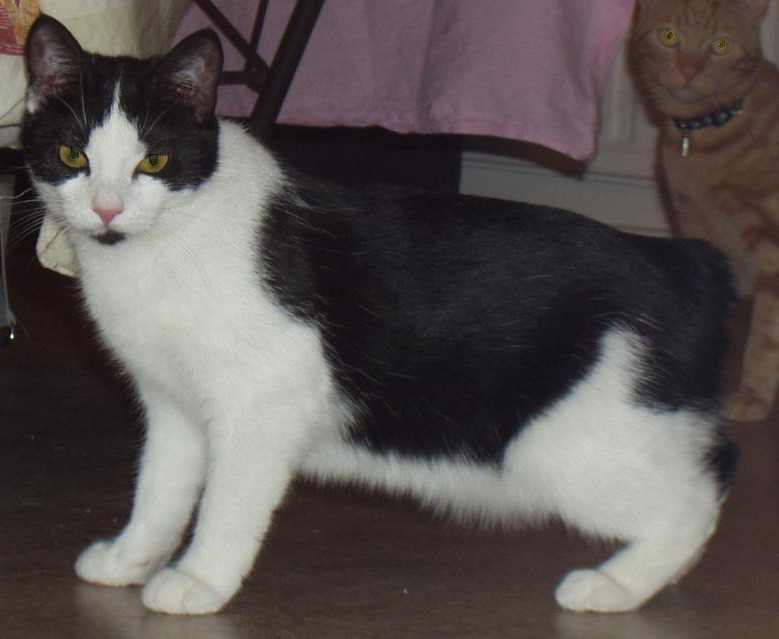

The Manx cat (/ˈmæŋks/), in earlier times often spelled Manks, is a breed of domestic cat (Felis catus) originating on the Isle of Man, with a naturally occurring mutation that shortens the tail. Many Manx have a small stub of a tail, but Manx cats are best known as being entirely tailless; this is the most distinguishing characteristic of the breed, along with elongated hind legs and a rounded head. Manx cats come in all coat colours and patterns, though all-white specimens are rare, and the coat range of the original stock was more limited. Long-haired variants are sometimes considered a separate breed, the Cymric. Manx are prized as skilled hunters, and thus have often been sought by farmers with rodent problems, and been a preferred ship's cat breed. They are said to be social, tame and active. An old local term for the cats on their home island is stubbin. Manx have been exhibited in cat shows since the 1800s, with the first known breed standard published in 1903.
References:
This article uses material from the Wikipedia article "Manx cat", which is released under the Creative Commons Attribution-Share-Alike License 3.0.
Picture: EliasAlucard at the English language Wikipedia [GFDL or CC-BY-SA-3.0], via Wikimedia Commons
{kind=link}